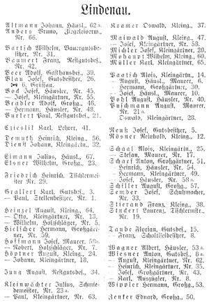
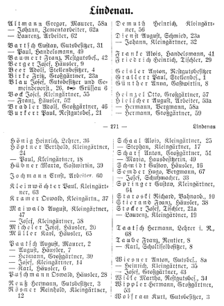
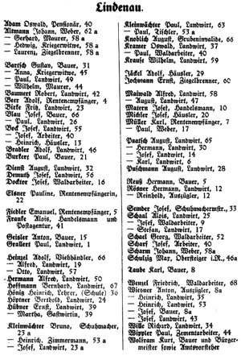

Lipienica wed³ug Adreßbuch Lindenau - dane Ÿród³owe
dodano: 01-03-2017
Na stronie internetowej http://www.merzdorf-im-riesengebirge.de/ mo¿na znaleŸæ miêdzy innymi skany trzech ksi¹¿ek: "Adreßbuch der Stadt und des Kreises Landeshut 1911", "Adreßbuch der Stadt und des Kreises Landeshut 1925", "Adreßbuch der Stadt und des Kreises Landeshut 1938". Na podstawie tych trzech pozycji postanowi³em przyjrzeæ siê dok³adniej jednej wybranej miejscowoœci: wiosce Lindenau, dzisiejszej Lipienicy. Poni¿ej skany stron z wykazami mieszkañców Lipienicy w latach 1911, 1925 i 1938.
| Adreßbuch 1911 | Adreßbuch 1925 | Adreßbuch 1938 |
|  |  |  |
Jak widaæ powy¿ej "Adreßbuch der Stadt und des Kreises Landeshut" drukowany by³ u¿ywan¹ w krajach niemieckojêzycznych czcionk¹ gotyck¹, tutaj jest to tzw. "fraktur". Dla u³atwienia sobie dalszej pracy postanowi³em powy¿sze trzy zestawienia alfabetyczne przepisaæ do tabeli zawieraj¹cej mieszkañców poszczególnych budynków. Otrzymane w ten sposób zestawienie znajduje siê poni¿ej, natomiast jego bardziej dok³adn¹ analizê przedstawiam na stronie "Lipienica wed³ug Adreßbuch Lindenau - mieszkañcy" oraz "Lipienica wed³ug Adreßbuch Lindenau - numery domów".
| Nr | Adreßbuch 1911 | Adreßbuch 1925 | Adreßbuch 1938 | |||
| 1 | Grallert Paul | Stellenbesitzer | Grallert Paul | Stellenbes. | Grallert Paul | Landwirt |
| 2 | Paatsch August | Maurer | ||||
| 3 | Grallert Karl | Gutsbes. | Reuß Hermann Wolfram Kurt |
Gutsbesitzer Gutsbesitzer |
Wolfram Kurt (1) | Bauer |
| 4 | Beer Adolf | Stellenbesitzer | Beer Adolf | Rentenempfänger | ||
| 5 | Heinzel Wilhelm Reuß Josef |
Holzschläger Gutsbesitzer |
Fiedler Emanuel Reuß Hermann |
Rentenempfänger Bauer |
||
| 6 | Paatsch August | Häusl., Maurer | Paatsch Karl | Häusler | Paatsch Karl | Landwirt |
| 7 | Hoffmann Robert | Holzschläger | Paatsch August | Häusler | Müller Karl | Rentenempfänger |
| 8 | Taube Franz Wiesner Karl |
Scholtiseibesitzer Auszügler |
Günther Anna Taube Franz Taube Karl |
Gastwirtin Rentier Scholtiseibesitzer |
Taube Karl | Bauer |
| 8a | Wiesner Anton | Gutsbes. | Wiesner Anton | Gutsbes. | Wiesner Anton Wiesner Josef |
Auszügler Bauer |
| 9 | Berger Josef | Häusler | Schaal Josef | Waldarbeiter | ||
| 10 | Paatsch Josef | Häusl., Maurer | Staroski Richard | Bahnarb. | Matern Josef | Handelsmann |
| 12 | Rösner Reinhold | Kleing. | Rösner Reinhold | Kleingärtner | Rösner Hermann Rösner Reinhold |
Landwirt Auszügler |
| 13 | Heinzel Otto | Kleingärtner | Bock Henrich | Häusler | ||
| 14 | Paatsch Alois | Kleingärtn. | Paatsch Josef | Kleingärtner | Paatsch Josef | Landwirt |
| 15 | Taube Florian | Gutsbes. | Geisler Anton (2) | Restgutsbesitzer | Geisler Anton | Bauer |
| 16 | Schmidt Gustav | Häusler | Docktor Josef | Waldarbeiter | ||
| 17 | Schaal Stefan | Maurer | Schaal Stephan | Kleingärtner | Müller Paul Schaal Stefan |
Weber Landwirt |
| 18 | Höptner Johann | Kleingärtner | Höptner Paul | Kleingärtner | ||
| 19 | Stuckert Laurenz | Tischlermstr. | Stocker Laurenz | Kleingärtner | Heinzel Alfred | Landwirt |
| 20 | Michler Josef | Kleingärtner | Micheler Josef | Häusler | Michler Josef | Häusler |
| 21 | Burkert Paul | Restgutsbes. | Burkert Paul | Restgutsbes. | Burkert Paul | Bauer |
| 21a | Puschmann August | Maurer | Stocker Josef | Tischler | ||
| 22 | Elsner Pauline | Rentenempfängerin | ||||
| 23 | Elsner Wilhelm | Großg. | Birke Fritz | Landwirt | ||
| 23a | Kleinwächter Julius | Schmiedemeister | Birke Fritz Dienst August |
Großgärtner Schmied |
Kleinwächter Bruno Kleinwächter Josef |
Schuhmacher Landwirt |
| 24 | Höptner August | Kleing. | Höptner Berthold | Kleingärtner | Höptner Berthold | Landwirt |
| 25 | Schaal Alois | Kleingärtn. | Schaal Alois | Kleingärtner | Schaal Alois | Landwirt |
| 26 | Blau Josef | Gutsbesitzer | Blau Josef | Gutsbesitzer | Blau Paul | Landwirt |
| 28 | Puschmann Oswald | Kleingärtner | Puschmann Oswald | Häusler | Puschmann August | Landwirt |
| 29 | Friedrich Heinrich | Tischlermeister | Friedrich Heinrich | Tischler | Jäckel Adolf | Häusler |
| 30 | Paatsch Hermann | Großgärtner | Paatsch Hermann | Großgärtner | Paatsch Hermann | Landwirt |
| 31 | Bartsch Wilhelm | Bauergutsbesitzer | Bartsch Gustav | Gutsbesitzer | Bartsch Gustav | Bauer |
| 32 | Dienst Johann | Kleingärtn. | Dienst Johann | Kleingärtner | Dienst August | Landwirt |
| 33 | Semder Josef | Schuhmacher | Semder Josef | Schuhmacher | Semder Josef | Schuhmachermstr |
| 34 | Jung August | Restgutsbes. | Wille Martha | Restgutsbes. | Wille Richard | Landwirt |
| 35 | Wiesner Heinrich | Kleingärtner | Wiesner Heinrich | Kleingärtner | Wiesner Heinrich | Landwirt |
| 36 | Hönig Heinrich | Lehrer | Hönig Heinrich | Lehrer (Schule) | ||
| 37 | Kramer Oswald | Kleing. | Kramer Oswald | Kleingärtn | Kramer Oswald | Landwirt |
| 38 | Stierand Franz | Kleing. | Stierand Franz | Häusler | ||
| 39 | Beer Adolf | Gasthausbes. | Hübner Marta | Gastwirtin | Hübner Ernst Hübner Martha |
Landwirt Gastwirtin |
| 40 | Pohl August | Häusler | Adam Oswald Bock Josef Kramer Paul Scharf Josef |
Pensionär Arbeiter Waldarbeiter Arbeiter |
||
| 41 | Czieslik Karl | Lehrer | Franke Alois | Handelsmann | Franke Alois | Handelsmann und Postagentur |
| 42 | Baumert Franz | Restgutsbes. | Baumert Franz | Restgutsbes. | Baumert Robert | Landwirt |
| 43 | Wiesner Josef | Großgärtner | Wiesner Josef | Großgärtner | Wiesner Josef | Landwirt |
| 44 | Bartsch Wilhelm Wippler Paul |
Maurer Zementarbeiter |
||||
| 45 | Bock Josef | Häusler | Bartsch Anna | Kriegerwitwe | ||
| 46 | Bradler Adolf | Großg. | Bradler Adolf | Großgärtner | Bradler Adolf | Landwirt |
| 46a | Schulzig Mar | Obersteiger i.R. | ||||
| 47 | Maiwald August | Kleing. | Maiwald August | Kleingärtner | Maiwald August | Landwirt |
| 48 | Bradler Hermann | Häusler | ||||
| 49 | Scharf Hermann | Kleingärtner | Bartsch Paul Scharf Maria |
Handelsmann Hausbesitzerin |
Bartsch Paul | Landwirt |
| 50 | Zenker Eduard | Großg. | Hermann Alfred | Landwirt | ||
| 51 | Scharf Anton | Großgärtner | Scharf Anton | Großgärtner | ||
| 52 | Schael Georg | Waldarbeiter | ||||
| 53 | Wippler Hermann | Großg. | Bock Franz Wippler Hermann |
Häusler Großgärtner |
Wiesner Heinrich | Landwirt |
| 53a | Wagner Albert | Häusler | Hielscher August | Arbeiter | Kleinwächter Heinrich Kleinweächter Paul |
Zimmermann Tischler |
| 54 | Scharf Heinrich | Häusler | ||||
| 55 | Bock Josef | Kleingärtner | Bock Josef | Kleingärtner | Bock Josef | Landwirt |
| 56 | Demuth Heinrich | Kleing. | Demuth Heinrich | Kleingärtner | Demuth Josef | Landwirt |
| 57 | Schiller August | Großg. | Heinzel Otto | Großgärtner | Heinzel Otto | Landwirt |
| 58 | Maiwald Josef | Kleingärtner | Maiwald Josef | Kleingärtner | Maiwald Alfred | Landwirt |
| 58a | Hoffmann Josef Scharf Josef |
Maurer Häusler |
Altmann Gregor Hielscher Hermann |
Maurer Bergmann |
Altmann Gerhard Altmann Hedwig Altmann Laurenz Scharm Johann |
Maurer Kriegerwitwe Ziegelbrenner Weber |
| 59 | Hielscher Hermann | Großgärtner | Hielscher Hermann | Großgärtner | Krause Wilhelm | Landwirt |
| 60 | Mohaupt Wilhelm | Kleing. | Jochmann Ernst | Arbeiter | Jochmann Ernst | Ziegelbrenner |
| 61 | ||||||
| 62 | Wiesner August | Kleingärtner | Altmann Laurenz | Arbeiter | ||
| 62a | Altmann Johann | Häusl. | Altmann Johann | Zementarbeiter | Altmann Johann | Weber |
| 63 | Kleinwächter Paul | Kleingärtner | Kleinwächter Paul | Kleingärtner | Kleinweächter Paul | Landwirt |
| 64 | Heinzel August | Kleing. | Springer Gustav | Kleingärtner | ||
| 65 | Müller Karl | Kleingärtner | Müller Karl | Häusler | Paatsch August | Landwirt |
| 66 | Anders Bruno | Ziegeleiverw. | Blau Josef Heinzel Adolf Knoblich August |
Bauer Viehhändler Grubeninvalide |
||
| 67 | Eimann Julius | Häusl. | Semder Hugo | Bergmann | Hoffmann Bernhard | Landwirt |
| 68 | Taatsch Hermann | Lehrer i. R. | Wenzel Friedrich | Waldarbeiter | ||
Uwagi:
(1) dla daty 1938 Wolfram Kurt nie ma numeru domu, ale prawdopodobnie bêdzie to numer 3, skoro tam mieszka³ on w roku 1925
(2) dla daty 1925 Geisler Anton nie ma numeru domu, ale prawdopodobnie bêdzie to numer 15, skoro tam mieszka³ on w roku 1938

{kind=link}
{kind=link}
{kind=link}